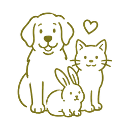
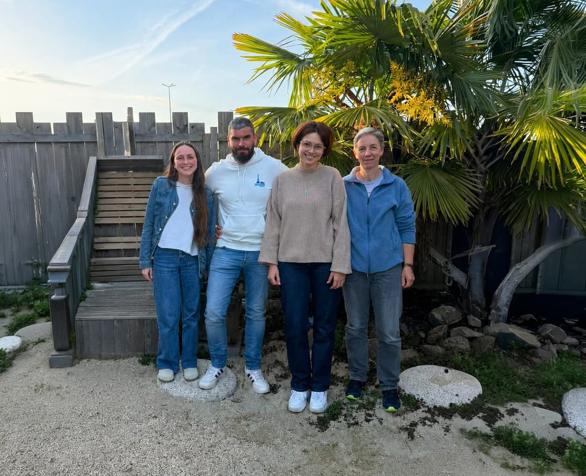
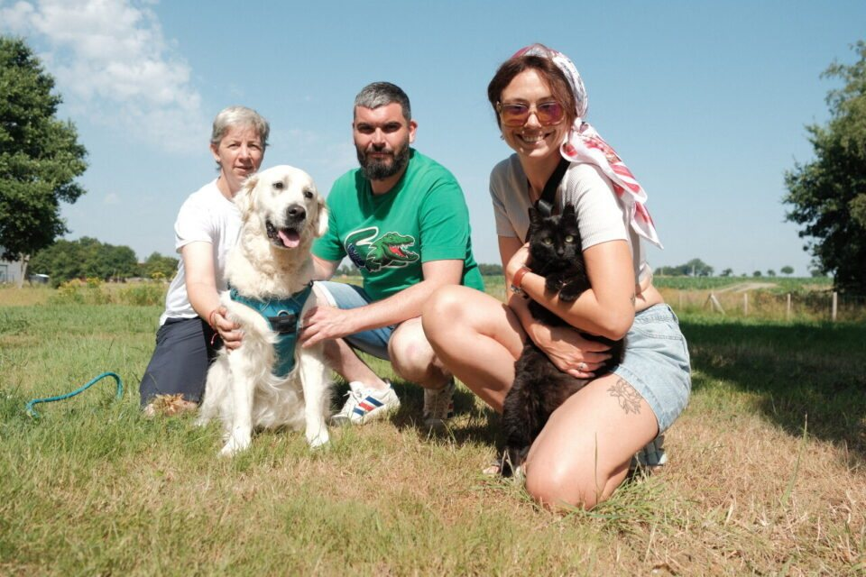

Le Syndicat des Gratouilles rassemble quatre professionnels indépendants du bien-être animal en Ille-et-Vilaine. Unis par des valeurs de confiance, d'entraide et de bienveillance, nous proposons des services complémentaires : pet sitting, cat sitting, pension canine familiale et accompagnement par l'animal. Notre collectif permet aux familles de trouver facilement le professionnel le plus adapté à leurs besoins, au sein d'un réseau de confiance.
Chaque membre exerce son métier en indépendant. Choisissez celui ou celle dont le service correspond à votre besoin, puis rendez-vous directement sur son site et ses réseaux.

Lise
Lise & Cie
Pet sitting
Visites, promenades et soins pour chiens, chats et NAC.
Châteaugiron (35)
Lise a tout plaqué en février 2026 pour exercer enfin un métier en accord avec ses valeurs. Elle se consacre à plein temps au pet-sitting : chiens, chats, NACs. Maman de Ninou, chat noir de 13 ans, et d'un lapin de près de 10 ans, Lise est également bénévole à la SPA.
Vitré et ouest de Vitré, alentours de Domagné et Châteaubourg (35)
Cat-sitter à domicile, Irina veille sur le confort de leur majesté féline, y compris les chats malades, sensibles ou âgés. Chez vous, votre chat garde ses repères et reçoit bien plus qu'un repas : présence, observation, nouvelles et photos après chaque passage. Catmom de 6 chats et nounou d'un septième en famille d'accueil pour l'association Moustaches & Cie, elle est bénévole en protection féline depuis plus de dix ans. Spécialisée en comportement félin, elle se forme en continu et validera ses acquis à la rentrée 2026 avec les formations Premiers secours félins et Éthologie appliquée au chat.
Accueil familial à domicile, deux chiens maximum à la fois. Sorties quotidiennes, nouvelles et photos aux propriétaires.
Entre Boistrudan et Moulins (35)
Chez Mika, les chiens sont accueillis comme à la maison, dans un cadre calme et sécurisé, au rythme de chacun. Deux pensionnaires maximum à la fois, pour une vraie attention à chaque chien. Engagé pour la solidarité, Mika reverse une partie de chaque garde à l'association Myosotis 35, qui soutient les enfants hospitalisés en Ille-et-Vilaine.
Accompagnement vers le bien-être par l'animal, à domicile et en structure, pour tous les âges.
Domagné (35)
Véro est artisan du lien humain-animal. Avec Niki, Scoop et Volt, ses chiens ressources, elle accompagne les humains de 0 à 99 ans : créer du lien, apaiser les émotions et offrir une vraie parenthèse de bien-être. Ses séances font profiter des bienfaits de la présence du chien, sans les contraintes de l'adoption. Véro intervient chez les particuliers, auprès de professionnels de santé (orthophonistes, psychologues…) et dans des structures comme les EHPAD, écoles, maisons de santé ou associations, toujours au rythme de chacun. Bénévole en EHPAD depuis 2021, elle pense chaque rencontre pour créer de la confiance et offrir un moment de réconfort.
Nos métiers sont différents et complémentaires, et c'est notre force. Plutôt que de nous concurrencer, nous nous connaissons, nous nous recommandons et nous nous entraidons. Quelle que soit votre demande, vous trouvez près de chez vous un professionnel de confiance, vraiment adapté à votre animal.
Confiance. Un réseau de professionnels qui se connaissent et se recommandent en toute transparence.
Entraide. On ne se concurrence pas : on avance mieux ensemble.
Bienveillance. Le bien-être des animaux et de leurs familles au cœur de chaque service.

De gauche à droite : Lise, Mika, Irina, Véro.

De gauche à droite : Véro, Mika, Irina.
Ils en parlent
On parle de nous dans la presse
actu.fr
Ils s'associent pour prendre soin de vos animaux de compagnie dans le pays de Vitré
Le pays de Vitré a désormais son collectif de professionnels du bien-être animal : pet sitting, cat sitting, pension canine familiale et médiation animale réunis dans un même réseau de confiance.
Emplacement réservé, le lien sera ajouté dès publication.
Bon à savoir
Questions fréquentes
Quelle est la zone d'intervention du Syndicat des Gratouilles ?
Le collectif intervient autour de Châteaugiron, Domagné, Vitré et Janzé, en Ille-et-Vilaine (35). Chaque membre dispose de son propre secteur, précisé sur sa carte.
Quels services propose le collectif ?
Quatre services complémentaires : le pet sitting avec Lise (Lise & Cie), le cat sitting avec Irina (Miaoucratie), la pension canine familiale avec Mika (Les Balades d'Iko & Alaska) et la médiation animale avec Véro (Niki & Scoop).
Comment contacter le Syndicat des Gratouilles ?
Par e-mail à syndicatdesgratouilles@gmail.com. Vous pouvez aussi contacter directement chaque professionnel via son site et ses réseaux, depuis la section des membres.
Le collectif a-t-il un compte commun sur les réseaux sociaux ?
Non. Chaque membre gère ses propres réseaux : retrouvez le site, la page Facebook et le compte Instagram de chacun sur sa carte.